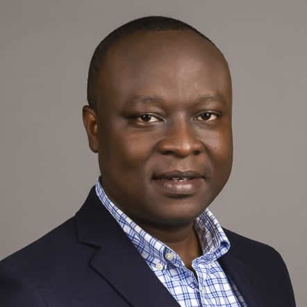
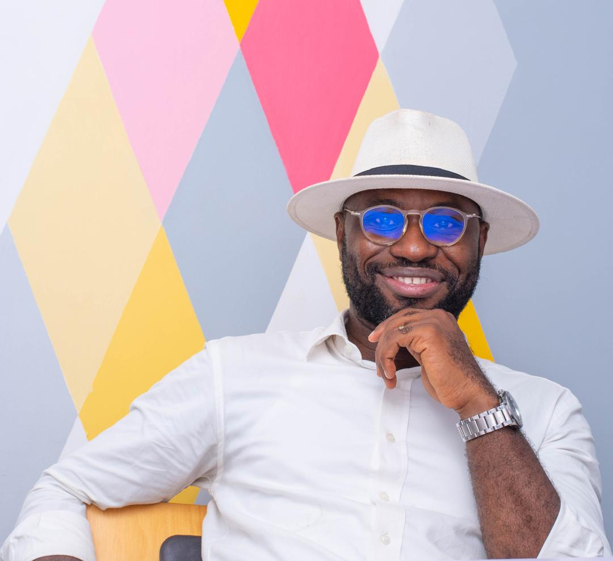
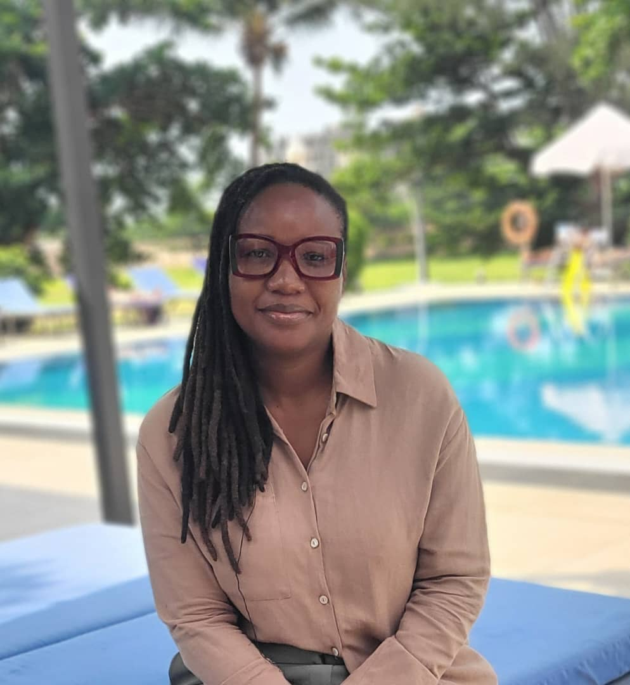

Our Team

Paterne GAYE GUINGNIDO
Chair (President)

Vignilé Sinodobe AGLI
Vice Chair (Vice President)

Hélène LAVILLE
Secretary
Crépin FADJO
Treasurer

Christelle AGO FAIHUN
Public Relations Officer
Jeanne VITO
Outreach & Membership Officer
Ida KINTOSSOU
Solidarity Officer
Vincent ZOSSOU
Development Officer